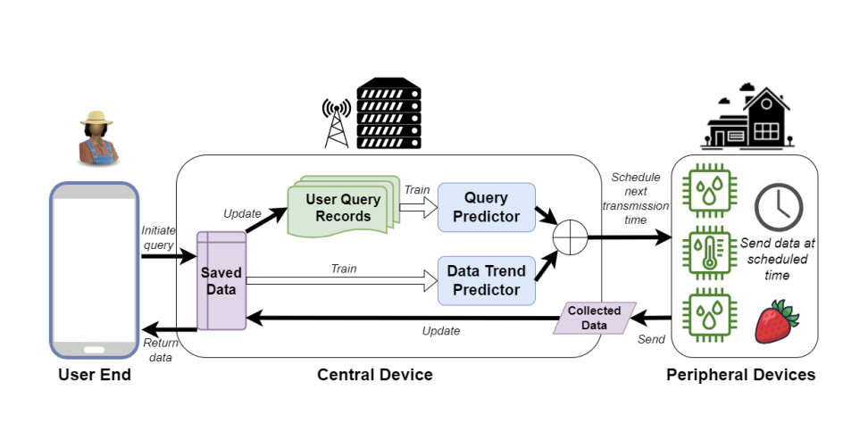
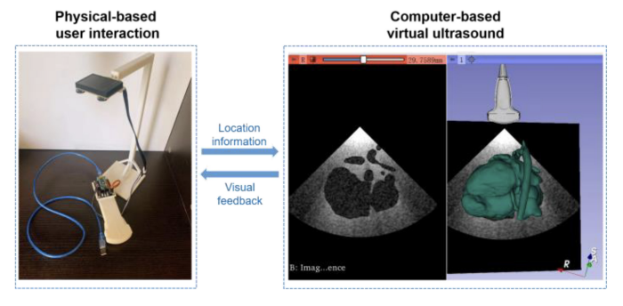

Ziyue Dang
Ph.D. Student
UCLA
ziyue (dot) dang (at) cs.ucla.edu
About Me
I am a Ph.D. student at UCLA Computer Science Department.
Research Interests
Mobile Computing
Pervasive Computing
IoT
News
[Sep. 2023]
Our paper about smart agriculture is presented at AgriSECON 2023.
Selected Publications

AgriSECON
LSTM-Driven Scheduling for Energy-Efficient Crop Monitoring in Wireless Networks
Ziyue Dang
, Fan Dang, Yankun Yuan
2023 20th Annual IEEE International Conference on Sensing, Communication, and Networking
(SECON)
, 2023.
PDF
BibTex
Presented at AgriSECON workshop

IEEE DTPI
Digital Twin-Based Skill Training With a Hands-On User Interaction Device to Assist in Manual and Robotic Ultrasound Scanning
Ziyue Dang
, Qi Yang, Zhaokun Deng, Jiancheng Han, Yihua He, Shuangyi Wang
IEEE Journal of Radio Frequency Identification, 2022.
PDF
BibTex
Oral Presentation at IEEE DTPI 2022
Powered by Jekyll and
Minimal Light
theme.